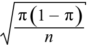

Normale Annäherung an die Fehlerverteilung
Wenn die Stichprobengröße, n, groß genug ist, ist die Binomialverteilung annähernd normal, und es ergibt sich folgende Annäherung
Fehler = p − π ~ normal (0,  )
Du wirst später sehen, dass es oftmals einfacher ist, diese normale Annäherung zu verwenden, anstatt der Binomialverteilung.
Genauigkeit der normalen Annäherung
Das untenstehende Diagramm zeigt die Binomialverteilung für die Fehler in Simulationen mit der Erfolgswahrscheinlichkeit π (rot) und ihrer normalen Annäherung (grau).
Use the sliders to verify that
Die normale Annäherung an die Fehlerverteilung ist daher plausibel, falls die Stichprobengröße angemessen groß ist und π nicht gegen Null oder Eins geht. (Wir werden später bessere Anhaltspunkte angeben.)
Die folgenden Beispiele zeigen, wie der Standardfehler ermittelt wird und die normale Annäherung an die Fehlerverteilung ist für jedes Beispiel skizziert.
Beispiele
Jeder der folgenden Datensätze wurde gesammelt, um Informationen über eine unbekannte Wahrscheinlichkeit bereitzustellen.
In jedem Beispiel ist die Stichprobengröße n groß, sodass die Fehler annähernd normal sind. Das Diagramm unten rechts zeigt die annähernde Normalverteilung der Fehlerr – ihr Wert ist Null (die Verzerrung) und seine Standardabweichung ist der Standardfehler des Schätzers.
| In jedem Beispiel gibt die Fehlerverteilung einen guten Hinwies darüber, wie weit der Stichprobenanteil wahrscheinlich von der wahren Wahrscheinlichkeit abweicht. |